HU Meiqi(胡美琪-武汉大学) |
News
- [2024.06] I am gonna to a postdoc at Sun Yat-sen University !
- [2024.05] One paper has been accepted by ISPRS (link)!
- [2024.02] One co-authored paper has been accepted by IEEE TGRS (link)!
- [2023.10] One co-authored paper has been accepted by IEEE JSTARS (link)!
- [2023.09] One co-authored paper has been accepted by IEEE JSTARS (link)!
- [2023.04] One co-authored paper has been accepted by IEEE JSTARS (link)!
- [2023.04] One paper is acceptted as a Poster by IGARSS 2023 (homepage)!
Research Interest
I am working in remote sensing image interpretation and analysis, Change detection; Deep learning; Information Extraction; Spectral unmixing. Currently, I focus on the following research topics:- Change detection with bi-temporal hyperspectral remote sensing images
- multi-class change detection
- Spectral unmixing and analysis
Co-authors
Education
- 2021.09-2024.06 Pursuing Ph.D of Photogrammetry and Remote Sensingin LIESMARS, Wuhan University. Supervisor: Prof. Liangpei Zhang & Bo Du & Chen Wu
- 2019.09-2021.06 M.E.Candidate of Photogrammetry and Remote Sensing in LIESMARS, Wuhan University. Supervisor: Prof. Liangpei Zhang & Bo Du & Chen Wu
- 2015.09-2019.06 B.E. of Surveying and Mapping Engineering in School of Geosciences and Info-Physics, Central South University.
Publications
Journals:
| 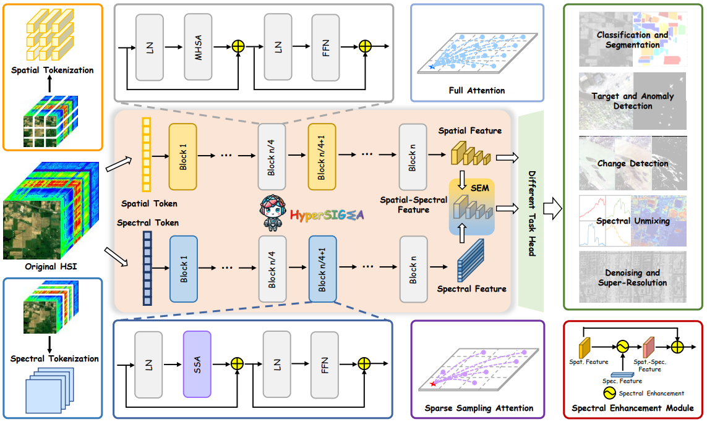 |
Di Wang, Meiqi Hu , Yao Jin, Yuchun Miao, Jiaqi Yang, Yichu Xu, Xiaolei Qin, Jiaqi Ma, Lingyu Sun, Chenxing Li, Chuan Fu, Hongruixuan Chen, Chengxi Han, Naoto Yokoya, Jing Zhang, Minqiang Xu, Lin Liu, Lefei Zhang, Chen Wu, Bo Du, Dacheng Tao, and Liangpei Zhang XXXX (XXX), 2024. (SCI Q1 TOP, IF=) [Paper][Code] |
| 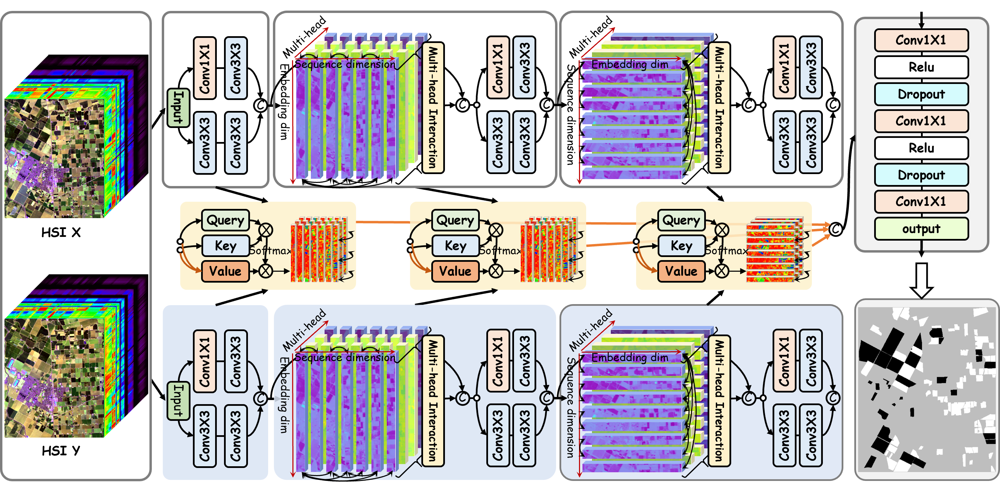 |
[10] GlobalMind: Global Multi-head Interactive Self-attention Network for Hyperspectral Change Detection
M. Hu, C. Wu, and L. Zhang, ISPRS Journal of Photogrammetry and Remote Sensing(ISPRS), 2023. (SCI Q1, IF=12.7) [Paper][Code] |
| 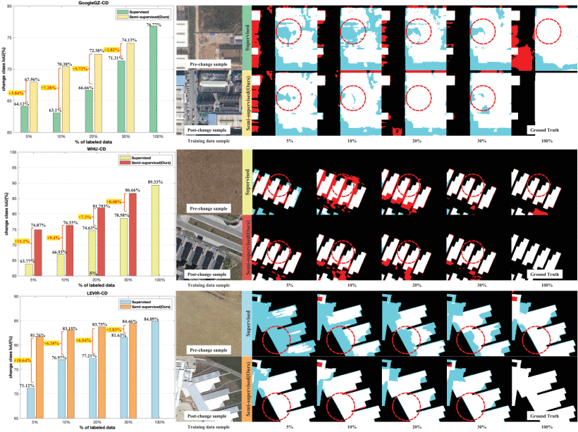 |
[9] C2F-SemiCD: A coarse-to-fine semi-supervised change detection method based on consistency regularization in High-Resolution Remote-Sensing Images
C. Han,C. Wu, M. Hu., J. Li, and H. Chen, IEEE Transactions on Geoscience and Remote Sensing (TGRS), 2023. (SCI Q1 TOP, IF=8.2) [Paper][Code] |
| 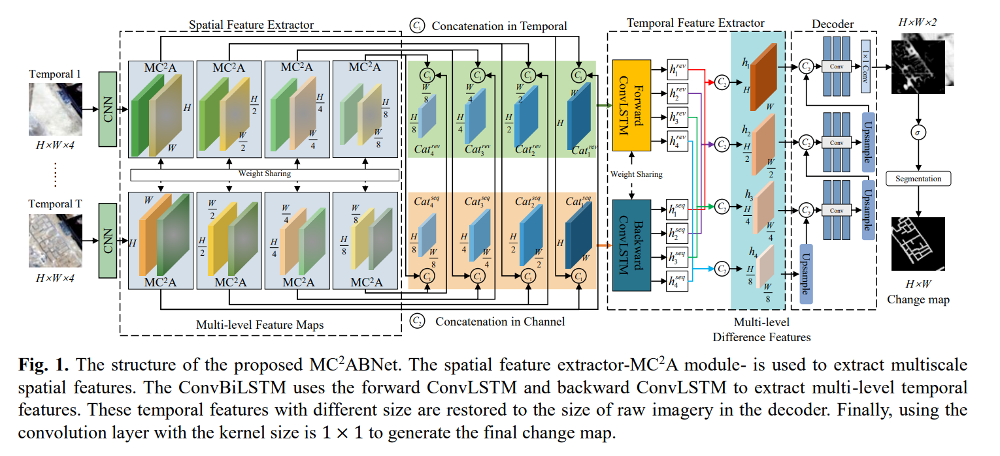 |
[8] Multiscale Change Detection Network based on Channel Attention and Fully Convolutional BiLSTM for Medium-resolution Remote Sensing Imagery
J. Li, M. Hu, and C. Wu, IEEE Journal of Selected Topics in Applied Earth Observations and Remote Sensing (JSTARS), 2023. (SCI Q2, IF=5.5) [Paper] |
| 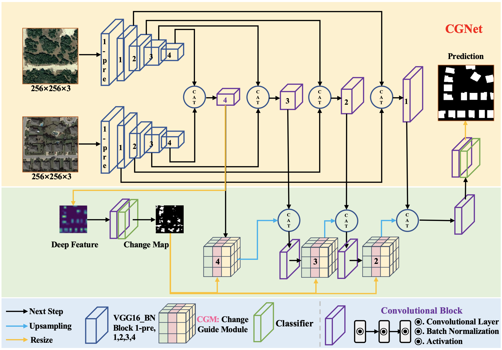 |
[7] Change Guiding Network: Incorporating Change Prior to Guide Change Detection in Remote Sensing Imagery
C. Han, C. Wu, H. Guo, M. Hu. J. Li, and H. Chen, IEEE Journal of Selected Topics in Applied Earth Observations and Remote Sensing (JSTARS), 2023. (SCI Q3, IF=5.5) [Paper][Code] |
| 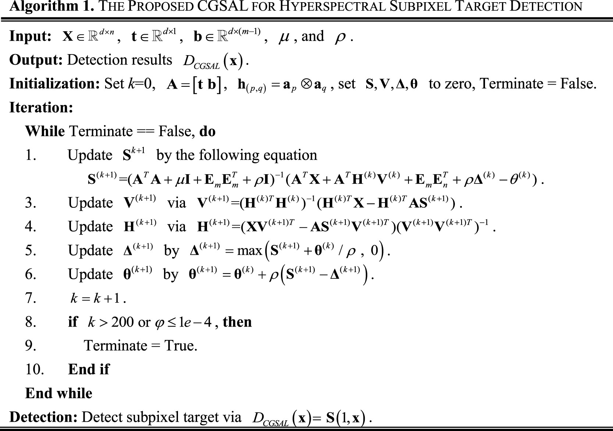 |
[6] Collaborative-guided spectral abundance learning with bilinear mixing model for hyperspectral subpixel target detection
D. Zhu, B. Du, M. Hu., Y. Dong and L. Zhang, Neural Networks (NN), 2023. (SCI Q1 TOP, IF=7.8) [Paper] |
| 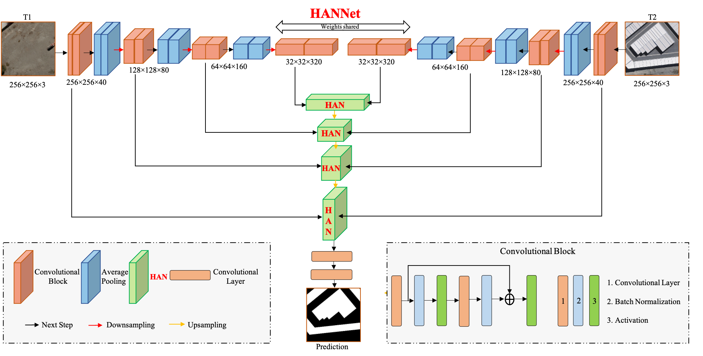 |
[5] HANet: A hierarchical attention network for change detection with bi-temporal very-high-resolution remote sensing images
C. Han,C. Wu, H. Guo , M. Hu. and H. Chen, IEEE Journal of Selected Topics in Applied Earth Observations and Remote Sensing (JSTARS), 2023. (SCI Q3, IF=5.5) [Paper][Code] |
| 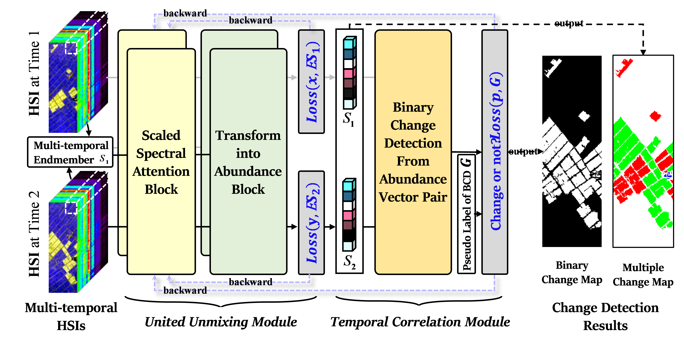 |
[4]Binary Change Guided Hyperspectral Multiclass Change Detection
M. Hu, C. Wu, B. Du and L. Zhang, IEEE Transactions on Image Processing (TIP), 2023. (SCI Q1 TOP, IF=10.6) [Paper][Code] |
 |
[3] HyperNet: Self-Supervised Hyperspectral Spatial–Spectral Feature Understanding Network for Hyperspectral Change Detection
M. Hu, C. Wu and L. Zhang, IEEE Transactions on Geoscience and Remote Sensing (TGRS), 2021. (SCI Q1 TOP, IF=8.2) [Paper][Code] |
| 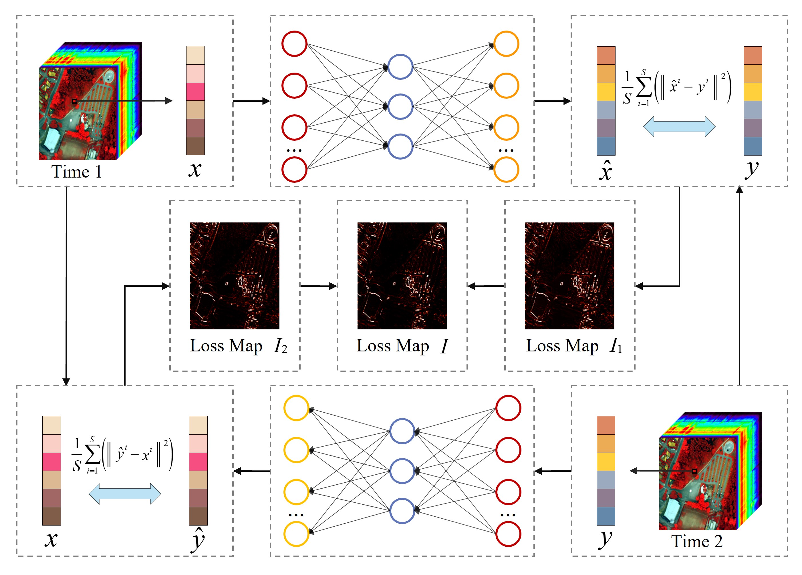 |
[2] Hyperspectral Anomaly Change Detection Based on Autoencoder
M. Hu, C. Wu, L. Zhang and B. Du, IEEE Journal of Selected Topics in Applied Earth Observations and Remote Sensing (JSTARS), 2021. (SCI Q3, IF=5.5) [Paper][Code] |
| 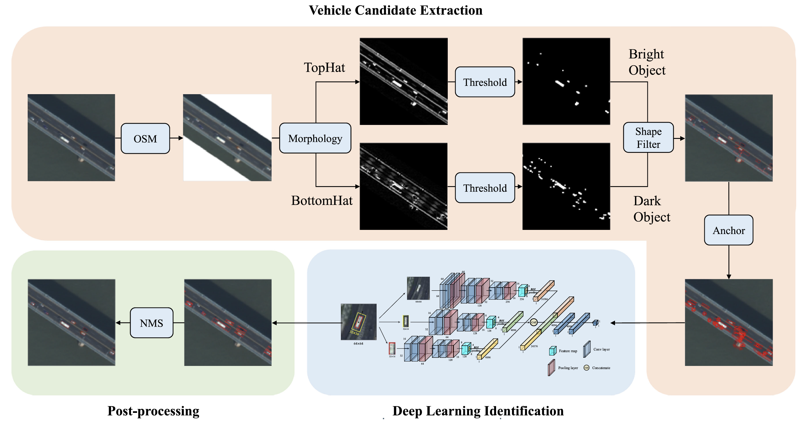 |
[1] Traffic density reduction caused by city lockdowns across the world during the COVID-19 epidemic: from the view of high-resolution remote sensing imagery
Wu, C., Zhu, S., Yang, J., Hu, M., Du, B., Zhang, L., Zhang, L., Han, C. and Lan, M., IEEE Journal of Selected Topics in Applied Earth Observations and Remote Sensing (JSTARS), 2021. (SCI Q3, IF=5.5) [Paper] |
Conferences:
| 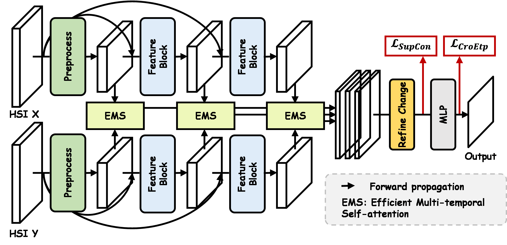 |
[2] EMS-Net: Efficient Multi-Temporal Self-Attention For Hyperspectral Change Detection
M. Hu, C. Wu, Proceeding of the IEEE International Geoscience and Remote Sensing Symposium (IGARSS 2023), 2023. (EI) [Paper] |
| 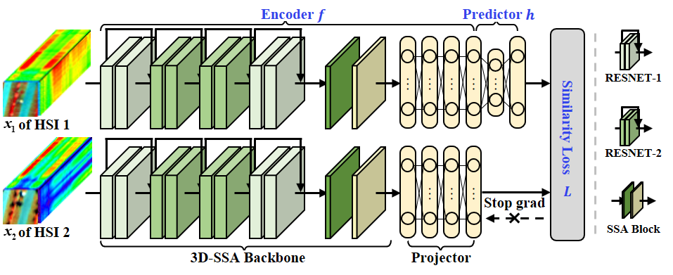 |
[1] Multi-Temporal Spatial-Spectral Comparison Network For Hyperspectral Anomalous Change Detection
M. Hu, C. Wu and B. Du, Proceeding of the IEEE International Geoscience and Remote Sensing Symposium (IGARSS 2022), 2022. (EI) [Paper] |
Membership:
- Geo-Spatial Information Science, Editorial Intern
- IEEE Geoscience and Remote Sensing Society (GRSS), Student Member
- IEEE GRSS Wuhan Chapter, Student Branch Secretary
- IEEE, Student Member
- ACM, Student Member
Journal Reviewer:
- IEEE Transactions on Image Processing (TIP)
- IEEE Transactions on Geoscience and Remote Sensing (TGRS)
- Geo-Spatial Information Science(GSIS)
- IEEE Journal of Selected Topics in Applied Earth Observations and Remote Sensing (JSTARS)
- IEEE Geoscience and Remote Sensing Letters (GRSL)
Awards
- 2023.10， First Prize of Academic Scholarship, Wuhan University | 武汉大学学业奖学金一等奖
- 2023.10，Yugang-Songxiao Scholarship | 于刚-宋晓奖学金
- 2023.07，ACM Turing Award Celebration Conference, Camera crew | ACM中国图灵大会 摄影摄像组
- 2022.12， The International Graduate Workshop on Geoinformatics 2022, Best Representation Award | 2022年国际地理信息学青年论坛, 最佳报告奖
- 2022.11，Outstanding Graduate Student, Wuhan University | 武汉大学优秀研究生
- 2022.11， Second Prize of Academic Scholarship, Wuhan University | 武汉大学 学业奖学金二等奖
- 2021.10， The 6th National Symposium on Imaging Spectral Earth Observation, Best Representation Award | 第六届全国成像光谱对地观测学术研讨会, 优秀报告奖
- 2019.06，Outstanding Graduate Student, Central South University | 中南大学优秀毕业生
- 2018.10，National Encouragement Scholarship for Undergraduates, Ministry of Education | 本科生国家励志奖学金
- 2017.11，Zhonghaida Scholarship | 中海达奖学金
- ...
Conference Experience
- 2023年12月10-16日，赴美国新奥尔良参加第三十七届神经信息处理系统会议，NeurIPS 2023
- 2023年11月10-13日，赴广州参加第七届全国成像光谱对地观测学术研讨会
- 2023年7月28-30日，赴武汉参加2023 ACM 中国图灵大会
- 2023年4月22-24日，赴长沙参加2023 图象图形学会 青年科学家会议